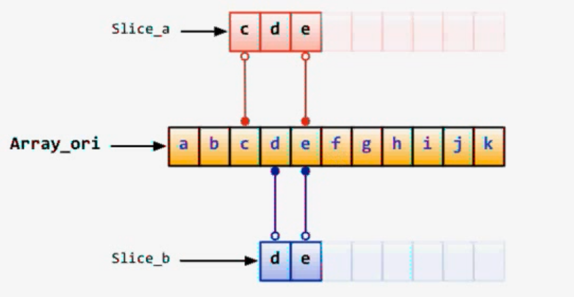

基础知识
文件代码的一般顺序
1 | //当前程序的包名 |
这样可读性更强
类型别名
type alias typename
这里严格来说不能称为别名，而是底层数据结构相同的自定义类型，在进行类型转化的时候还是需要进行显示转换。
变量组声明
1 | var ( |
基本数据类型
布尔类型：bool
- 长度：1字节
- 不可以使用数字代表true或者false
整型：int/uint
- 根据运行平台，可能为32位或64位
8位整型：int8/uint8
- 长度：1字节
字节型：byte
- uint8别名
16位整型：int16/uint16
32位整型：int32(rune)/uint32
64位整型：int64/uint64
浮点型：float32/float64
- 长度：4/8字节
- 小数位：精确到7/15小数位
复数：complex64/complex128
- 长度：8/16字节
足够保存指针的32位或64位整数型：uintptr
- 随操作系统而改变
其他值类型：array, struct, string
伪引用类型：slice, map, chan
接口类型：interface
函数类型：func
类型转换
普通类型可以通过type(变量)来进行显式强制转换
对于接口类型向上转型的话，应该通过comma-ok类型断言或者type switch来进行操作
赋值操作
- 支持自动推断类型
- 类型安全，不存在类型隐式转换，只能强制转换，如
var a float32 = 1.1b := int(a)
b := 1，最简的声明并赋值变量的形式。不能用于全局变量。- 全局变量的声明可以使用
var ( )方式简写 - 全局变量的声明不可以省略
var，但是可以使用并行方式 - 所有变量都可以使用类型推断
- 局部变量不可以使用
var( )方式简写，只能使用并行方式。 - 并行方式：
var a, b, c int = 1, 2, 3 a, _, c, d := 1, 2, 3, 4
枚举
iota是常量计数器，从0开始，组中经过一个常量会自动递增1，通过初始化规则与iota可以达到枚举的效果。每遇到一个const关键字，iota就会重置为0。
初始化规则：在定义常量组的时候，如果不提供初始值，则表示将使用上行的表达式
比如：
1 | const { |
这里 a = 65, b = 65, c = 2, d = 3
运算符
一元运算符：^ !
二元运算符：
*/%<<>>&&^+-|^==!=<<=>=><-（专门用于channel）&&||
1 | 6：0110 |
new、make操作
new(T)分配了零值填充的T类型的内存空间，并且返回其地址，即一个*T类型的值。用Go的术语说，它返回了一个指针，指向新分配的类型T的零值。
内建函数make(T, args)与new(T)有着不同的功能，make只能创建slice、map和channel，并且返回一个有初始值(非零)的T类型，而不是*T。
指针
直接采用.来操作指针目标对象的成员。
通过&取变量地址，使用*通过指针间接访问目标对象
默认值为nil而非null
递增递减语句
只能a++或a-—这么单独作为语句使用，而不能作为表达式使用。
注意：没有++a
判断语句
if后没有括号
if左大括号需要和if同一行
在if后支持初始化操作，如
1 | if a, b:=1, 2; a>1 && b>1 { |
在 if 的便捷语句定义的变量同样可以在任何对应的 else 块中使用。
循环语句for
只有一个循环语句关键字for，但是支持三种形式
形式一：无限循环，在循环体内手动
break退出循环
1 | var a = 'A' |
形式二：类似
while
1 | var a = 'A' |
形式三：类似其他语言的
for语句的形式
1 | for a := 1; a < 5; a++ { |
选择语句switch
可以使用任何类型或表达式作为条件语句
不需要写break，默认不会继续执行接下来的case
如果希望执行下一个case，需要使用fallthrough语句
支持一个初始化表达式（可以是并行方式）。右侧需要跟上分号
左大括号必须和条件语句在同一行
1 | switch a := 1; { |
跳转语句goto, break, continue
三个语法都可以配合标签使用
标签名区分大小写，若不使用会造成编译错误
break和continue配合标签可以用于多层循环的跳出
数组Array
Go的数组是值语义。一个数组变量表示整个数组，它不是指向第一个元素的指针（不像 C 语言的数组）。 当一个数组变量被赋值或者被传递的时候，实际上会复制整个数组。（为了避免复制数组，你可以传递一个指向数组的指针，但是数组指针并不是数组，却依然可以直接使用索引访问。）
定义数组的格式：var <varName> [n]<type>, n> = 0
数组的长度也是类型的一部分，因此具有不同长度的数组为不同类型
数组在Go中为值类型，不同于java中的引用类型
数组之间可以进行==或者!=进行比较，但是不可以比大小
Go支持多维数组
使用new来创建数组，返回一个指向数组的指针。
不论是数组本身还是一个指向数组的指针都可以通过[ ]运算符来进行读取某个位置的元素
静态初始化
1 | a := [2]int{1, 2} // [1, 2] |
多维数组
1 | a := [2][2]int{ |
切片Slice

本身并不是数组，指向底层的数组
作为变长数组的替代方案，可以关联底层数组的局部或全部
为引用类型
可以直接创建或从底层数组获取生成
使用len()获取元素个数，cap()获取容量
一般使用make()创建
如果多个slice指向相同底层数组，其中一个的值改变会影响全部
make([]T, len, cap)，其中cap可以省略，则和len的值相同
len表示存数的元素个数，cap表示容量
从Go1.2开始slice支持三个参数
1 | var array [10]int |
1 | var s1 []int //定义slice |
Reslice
reslice时索引以被slice的切片为准
索引不可以超过被slice的切片的容量cap()
索引越界不会触发底层数组的重新分配而是引发错误
Append
可以在slice尾部追加元素
可以将一个slice追加在另一个slice尾部
如果最终长度未超过追加到slice的容量则返回原始slice
如果超过追加的slice的容量则将重新分配数组并拷贝原始数据
Copy
用于覆盖目标的部分元素，第一个参数是目标，第二个参数为源，可以指定覆盖哪部分
1 | a1 := []int{1, 2, 3} |
疑问1
从数组中截取中间部分的某个切片，得到的切片的容量是如何确定的？
实验以及结论
1 | b := [10]int{1, 2, 3, 4, 5, 6, 7, 8, 9, 10} |
结论：容量都是从切片开始索引处到原数组的末尾
疑问2
从数组中截取中间部分的某个切片，如果在末尾添加元素（不超过切片容量和超过切片容量）则元数组会有什么变化？
实验以及结论
1 | b := [10]int{1, 2, 3, 4, 5, 6, 7, 8, 9, 10} |
结论：
切片在添加元素后不超过其容量的情况下，将会修改底层原数组元素，且添加进去的元素值将会替换底层原数组对应位置的值。
当切片添加元素后超过其容量的情况下，将不会修改底层原数组的元素。
注意在长度为2，容量为3的情况下，分两次添加，一次添加一个，第一次添加将会修改原数组；而一次性添加两个元素则不会修改。
疑问3
reslice后的容量如何确定？
实验以及结论
1 | b := [10]int{1, 2, 3, 4, 5, 6, 7, 8, 9, 10} |
结论：根据原切片来定
疑问4
既然说
silce是引用类型，那么在函数中向slice添加元素（没有发生扩容的情况下）为什么在外部不会影响？代码如下：
2
3
4
5
6
7
8
9
10
11
12
13
14
15
16
17
import (
"fmt"
)
func Add(s []int) {
s = append(s, 1)
}
func main() {
s := make([]int,3,5)
Add(s)
fmt.Println(s) //输出[0, 0, 0]
}
结论：
其实slice是一个“伪引用类型”，其定义为
1 | struct { |
所以当将slice作为参数传入函数的时候，应该是值拷贝，但是内部指针指向的数组还是没变，之后通过append向底层数组中成功添加元素（假设此时没有发生扩容），此时注意虽然内部数组发生了改变，但是len字段修改的是副本，并不会影响外部实际的切片变量。
验证代码：
1 | package main |
Map
1 | m:=map[int]string{1:"a", 2:"b"} //静态初始化 |
类似其他语言中的哈希表或字典
线程不安全
删除元素：delete(m, key)
通过双赋值检测某个键存在：elem, ok = m[key]
key必须支持==或!=比较运算的类型，不可以是函数、map或slice
Map查找比线性搜索快很多，但是比使用索引访问数据的类型慢100倍
Map使用make()创建，支持:=这种简写方式
make([keyType]valueType, cap)，cap表示容量，可省略
超出容量时会自动扩容，但尽量提供一个合理的初始值
使用len()获取元素个数
键值对不存在的时候自动添加，使用delete()删除某键值对
使用for range对map和slice进行迭代操作，其中的两个迭代变量都只是一个副本，修改它不会影响原容器，如果需要影响则需要通过索引(key)，如
1 | for k,v:=range myMap{ } //key 和 value |
函数function
Go函数不支持嵌套、重载和默认参数
但支持：
- 无需声明原型
- 不定长度变参
func f(a ...int) {} - 多返回值
- 命名返回值参数
- 匿名函数
- 闭包，和js一样，支持高阶函数
定义函数使用关键字func，且做大括号不能另起一行
函数也可以作为一中类型使用
1 | //接收参数a,b,c均为int型，可以省略部分类型声明 |
defer
延迟的函数调用被压入一个栈中。当函数返回时， 会按照后进先出的顺序调用被延迟的函数调用。
defer 语句会延迟函数的执行直到上层函数返回。
延迟调用的参数会立刻生成，但是在上层函数返回前函数都不会被调用。
即使函数发生严重错误也会执行
支持匿名函数的调用
常用于资源的清理、文件关闭、解锁以及记录时间的等操作
通过与匿名函数配合可在return之后修改函数计算结果，利用闭包或者通过指针
如果函数体内某个变量作为defer是匿名函数的参数，则在定义defer时即以及获取了拷贝，否则则是引用某个变量的地址
go没有异常机制，但有panic/recover模式来处理错误
1 | func A() { |
panic可以在任何地方引发，但recover只有在defer调用的函数中有效
结构struct
go中的struct与C中的非常类似，并且go中没有class
使用type <name> struct {}定义结构，名称遵循可见性规则
1 | type person struct{ |
作为函数参数时为值拷贝，如果需要修改外部的实参，可以通过指针
支持匿名结构体作为字段，但是这种结构初始化的时候不能使用字面值直接初始化
1 | type person struct{ |
支持指向自身的指针类型成员
支持匿名结构，可用作成员或定义成员变量
1 | a := &struct { //匿名结构 |
匿名结构也可以用于map的值
可以使用字面值对结构进行初始化
允许直接通过指针来读写结构成员，不需要解引用后再访问
相同类型的成员可以进行拷贝赋值
支持==与!=比较运算符，但不支持>或<
支持匿名字段，本质上是定义了以某个类型名为名称的字段
1 | type person struct{ |
嵌入结构作为匿名字段看起来像继承，但不是继承可以使用匿名字段指针
1 | type person struct { |
方法method
通过显式说明receiver来实现与某个类型的组合
1 | func (receiver *person) Print(){ //将Print绑定到person结构上 |
通过相同包内的类型别名可以将任意类型绑定
1 | type INT int |
只能为同一个包内的类型定义方法
receiver可以是类型的值或者指针，而且
如果一个method的receiver是*T,你可以在一个T类型的实例变量V上面调用这个method，而不需要&V去调用这个method。即实例变量调用指针方法不需要取地址。
如果一个method的receiver是T，你可以在一个T类型的变量P上面调用这个method，而不需要 P去调用这个method。即指针变量调用实例方法不需要解引用。
即指针拥有所有的method，但是变量只拥有receiver为变量的method
不存在方法重载
可以使用值或指针来调用方法，编译器会自动完成转换
从某种意义上来说，方法是函数的语法糖，因为receiver其实就是方法所接收的第一个参数
1 | var i INT |
如果外部结构和嵌入结构存在同名方法，则优先调用外部结构的方法
类型别名不会拥有底层类型所附带的方法
方法可以调用结构中的非公开字段，访问权限是包级别的，即私有意味着只有本包可以访问。
接口interface
接口是一个或多个方法签名的集合
只要某个类型拥有该接口的所有方法签名，即算实现该接口，无需显式声明实现了哪个接口，这称为structural typing
接口只有方法声明，没有实现，没有数据字段
接口可以匿名嵌入其他接口，或嵌入到接口中
将对象复制给接口时，会发生拷贝，而接口内部存储的是指向这个复制品的指针，既无法修改复制品的状态，也无法获取指针。即发生多态赋值之时是值传递，修改原值无法影响接口。
只有当接口存储的类型和对象都为nil时，接口才等于nil
1 | var a interface{} |
接口调用不会做receiver的自动转换。在进行类似“多态”的赋值操作时，编译器会检查实现类的实现方式中采用的receiver，只要有一个实现方法采用了指针receiver，那么多态赋值的时候就必须采用指针的形式。如果均没有采用指针receiver，那么可以既可以使用指针也可以使用对象。如果声明的receiver不是指针，那么就算以指针赋值接口也无法在方法内部修改变量的值。
1 | type USB interface { |
接口同样支持匿名字段方法
接口也可实现类似OOP中的多态
1 | type USB interface { |
空接口可以作为任何类型数据的容器
Type Assertion（Comma-ok断言）语法：value, ok := element.(T)。element必须是接口类型的变量，T是普通类型。如果断言失败，ok为false，否则ok为true并且value为变量的值。
Type switch：
1 | switch value := element.(type) { |
反射reflection
反射可以大大提高程序的灵活性，使得interface{}有更大的发挥余地
反射使用TypeOf和ValueOf函数从接口中获取目标对象信息
反射会将匿名字段作为独立字段（匿名字段本质）
想要利用反射修改对象状态，前提是interface.data是settable，即pointer-interface
通过反射可以“动态”调用方
1 | type User struct { |
并发Concurrency
goroutine只是由官方实现的超级“线程池”而已。每个实例4-5KB的栈内存占用和由于实现机制而大幅减少的创建和销毁开销，是制造Go号称的高并发的根本原因。另外goroutine的简单易用，也在语言层面上给予了开发者巨大的便利。
goroutine奉行通过通信来共享内存，而不是共享内存来通信。
Channel
Channel是goroutine沟通的桥梁，通道的发送/接收操作在对方准备好之前是阻塞的
通过make创建，close关闭
Channel是引用类型
发送者可以 close 一个 channel 来表示再没有值会被发送了。接收者可以通过赋值语句的第二参数来测试 channel 是否被关闭：当没有值可以接收并且 channel已经被关闭，那么经过
1 | v, ok := <-ch |
之后 ok 会被设置为 false。
可以使用for range来迭代不断操作channel，直到显式调用close关闭通道
可以设置单向或双向通道
1 | var send_only chan<- int // channel can only send data |
可以设置缓存大小，在未被填满前不会发生阻塞，变为异步，元素会按照发送的顺序被接收，即：在缓冲满载（缓冲被全部使用）之前，给一个带缓冲的通道发送数据是不会阻塞的，而从通道读取数据也不会阻塞，直到缓冲空了。
Select
1 | select { |
可处理一个或多个channel的发送与接收
default语句可选。
没有fallthrough行为。
- 如果都阻塞了，会等待直到其中一个可以处理
- 如果多个可以处理，随机选择一个
- 如果没有通道操作可以处理并且写了
default语句，它就会执行：default永远是可运行的（这就是准备好了，可以执行） - 如果没有 case，select 就会一直阻塞
在任何一个case中执行break或者return将会终止整个select
可以设置超时，比如
1 | select { |
疑问1
管道设了缓存之后，有什么区别？
向带缓存的channel中发送数据的时候，只有在缓冲区满的时候写者才会阻塞。而当缓冲区的为空的时候，读者才会阻塞。联想到了《计算机网络》里面的“滑动窗口协议”，窗口值（缓冲区）为1的时候，能够保证数据流的有序性，当窗口值（缓冲区）大于1时，就变成了异步操作，吞吐量会增加
疑问2
select有什么用？机制是什么样的？
select 语句使得一个 goroutine 在多个通讯操作上等待。
select 会阻塞，直到条件分支中的某个可以继续执行，这时就会执行那个条件分支。当多个都准备好的时候，会随机选择一个。如
1 | package main |
疑问3
不设置缓冲的channel和设置缓冲为1的channel有区别么？
有区别，区别在于向放入第一个元素之后，不设置缓冲的channel将被阻塞无法继续进行，而设置缓冲为1的channel将可以继续执行剩下的操作，直到试图将channel中的元素扩增为2时，会发生阻塞
sync
提供了一些基本的同步原语，用于并发控制
sync.Once：实现多次调用一次执行。只有第一次调用才会执行，之后如果要再次执行需要重新创建一个新的对象
sync.WaitGroup：直到所有注册的并发任务都执行结束了，才继续执行。通过sync.Add(n)来增加计数器的值，通过sync.Done()将计数器的值减一
sync.Mutex：信号量。提供Lock和Unlock两个方法，分别对应加锁和解锁。可以用 defer 语句来保证互斥锁一定会被解锁
sync.RWMutex：读写锁。在互斥锁的基础上，还能够提供写锁定，但是不锁定读的功能
sync.Cond：条件等待。通过Wait让协程等待，通过Signal让一个等待的协程恢复，通过Broadcast让所有等待的协程恢复
runtime
Goexit退出当前执行的goroutine，但是
defer函数还会继续调用Gosched让出当前goroutine的执行权限，调度器安排其他等待的任务运行，并在下次某个时候从该位置恢复执行。
NumCPU返回 CPU 核数量
NumGoroutine返回正在执行和排队的任务总数
GOMAXPROCS用来设置可以并行计算的CPU核数的最大值，并返回之前的值。
一些容易出错的地方
slice自动扩容导致指针值改变
1 | func myAppend(s []int, v int) { |
因为slice是引用类型，所以本以为在函数内修改其的值后，也会导致外部改变，但是最终输出确为空。这是因为在函数内append过程中导致了slice的重新分配底层的数组，这会导致内部的s的指向改变，而外部不受影响。
解决方案
- 创建的时候就估计容量，避免在函数内发生扩容
- 需要向
slice中添加元素的函数每次调用返回切片的引用更新外部切片变量 - 传入切片的指针
使用部分slice导致内部使用的数组一直无法释放
整个数组将被保存在内存中，直到它不再被引用。 有时候可能会因为一个小的内存引用导致保存所有的数据。
例如， FindDigits 函数加载整个文件到内存，然后搜索第一个连续的数字，最后结果以切片方式返回。
1 | var digitRegexp = regexp.MustCompile("[0-9]+") |
这段代码的行为和描述类似，返回的 []byte 指向保存整个文件的数组。因为切片引用了原始的数组， 导致 GC 不能释放数组的空间；只用到少数几个字节却导致整个文件的内容都一直保存在内存里。
要修复整个问题，可以将感兴趣的数据复制到一个新的切片中：
1 | func CopyDigits(filename string) []byte { |
Go语言中没有真正的引用类型
号称引用类型的slice，map，channel其实都是一个指针的包装类。
所以像用type struct关键字定义的一些类型，如果进行参数传递，并且需要能够将修改在外部体现的时候，应该传递指针。比如sync.WaitGroup、slice变量。
引用别的包
总是忘记加上包前缀
使用goroutine时
注意传递的sync.WaitGroup变量应该是指针。
加锁之后一定要解锁，中间不能包含可能的return分支。
Go tour爬虫习题
题目地址：https://tour.go-zh.org/concurrency/10
1 | package main |
关于go generate
Go程序初始化过程
程序的初始化和执行都起始于main包。如果main包还导入了其它的包，那么就会在编译时将它们依次导入。有时一个包会被多个包同时导入，那么它只会被导入一次（例如很多包可能都会用到fmt包，但它只会被导入一次，因为没有必要导入多次）。当一个包被导入时，如果该包还导入了其它的包，那么会先将其它包导入进来，然后再对这些包中的包级常量和变量进行初始化，接着执行init函数（如果有的话），依次类推。等所有被导入的包都加载完毕了，就会开始对main包中的包级常量和变量进行初始化，然后执行main包中的init函数（如果存在的话），最后执行main函数。

Go反射机制剖析
go语言中接口变量的实现机制为，内部保存了一对值（接口变量实际存放的那个原始变量，前者的类型描述），正是基于此机制，才能使用type assertion来对接口变量进行向下转型的判断类型。
反射的第一个法则：interface{}—> reflect.Value
首先，需要知道reflect包中的两个类型：Type和Value，通过这两个类型来访问接口值。然后还有两个方法reflect.TypeOf和reflect.ValueOf，以此从接口变量中获取Type和Value值，其实如果获得了Value值，就可以通过它来获得Type值
Type和Value都有一个Kind()方法，返回一个表示类型的常量。
Value有一个Type()方法，返回Value变量的类型
Value有类型Uint, Float64, Slice等的方法，返回其内部存储的值
反射库中的Value变量的getter和setter方法使用的是同类型变量中值域最大的那种，如对于所有的有符号整数采用的是Int64，所以Int()方法返回的值的类型也是Int64，所以有时可能需要做一下强制类型转换。
Kind()作用于自定义类型的时候，返回的是真实的被包装的类型，而不是类型”别名”，但是Type返回的是”别名”
反射的第二个法则： reflect.Value —>interface{}
可以使用Interface()方法收集类型和值的信息，将一个Refect.Value恢复为其原始值。其方法签名为：
1 | // 返回的是一个空接口类型 |
所以有时需要进行type assertion针对于fmt包中的方法，无需进行显式转换，因为其内部代我们进行了转换。
总而言之：Interface()是ValueOf()的逆方法，值在interface{}和reflect.Value在之间转换。
反射的第三个法则：如果要修改反射对象的值，那么要求值为settable的
1 | var x float64 = 3.4 |
以上代码会报错panic: reflect.Value.SetFloat using unaddressable value，这是因为变量v是非settable的。并不是所有的反射对象都是settable
CanSet()方法返回一个变量的settability。
什么是
settability呢？Settability is a bit like addressability, but stricter. It’s the property that a reflection object can modify the actual storage that was used to create the reflection object. Settability is determined by whether the reflection object holds the original item.
即反射对象是否能够修改原始变量的值，而不是原始变量的拷贝。
1 | var x float64 = 3.4 |
依旧无法修改，这是因为这里反应的是指针p的settability而不是p所指向的那个真实对象的settability。为了得到指针p所指向的对象，通过Elem()方法，其返回值的settability就是为true的了。
另外，需要指出的是只有导出的字段才可以被修改，即首字母大写的。
这里涉及的反射的应用还很少，反射还可以用于管道的发送和接收，分配内存，使用切片和map，调用方法和函数等。
Web编程
路由注册的内部实现
一个简单的web程序如下
1 | package main |
其中sayhelloName为一个Handler，通过路由将对应的url映射到相应注册的Handler上，服务器内部定义如下
1 | type ServeMux struct { |
路由规则中的muxEntry定义为
1 | type muxEntry struct { |
可以看到服务器内部是以Handler这个类型来存储处理函数的，而其是一个接口
1 | type Handler interface { |
即只有实现了ServeHTTP(ResponseWriter, *Request)的类型才可以被服务器存储为处理函数，而我们写的func sayhelloName(w http.ResponseWriter, r *http.Request)并没有实现这个方法，所以我们需要为其添加ServeHTTP，因为go语言可以为任何类型添加方法（自认为这里采用了适配器模式），先将这两个函数（ServeHTTP、sayhelloName）的共性提取——将形如func(ResponseWriter, *Request)的函数定义为一个新类型HandlerFunc
1 | type HandlerFunc func(ResponseWriter, *Request) |
这样就可以将func sayhelloName(w http.ResponseWriter, r *http.Request)强制转换成HandlerFunc类型，然后为HandlerFunc添加ServeHTTP方法
1 | // ServeHTTP calls f(w, r). |
这样只要是形如func xxx(w http.ResponseWriter, r *http.Request)的函数都可以被存储为处理器
启示
在其他面向对象的语言中，实现方式为创建很多实现了Handler接口的类，然后通过多态来传递参数实现面向接口编程的统一美。但是在go语言中同样的效果不一定面向类（struct），go语言中能够做到直接面向函数，省去了创建很多struct的过程，对程序员更加友好。